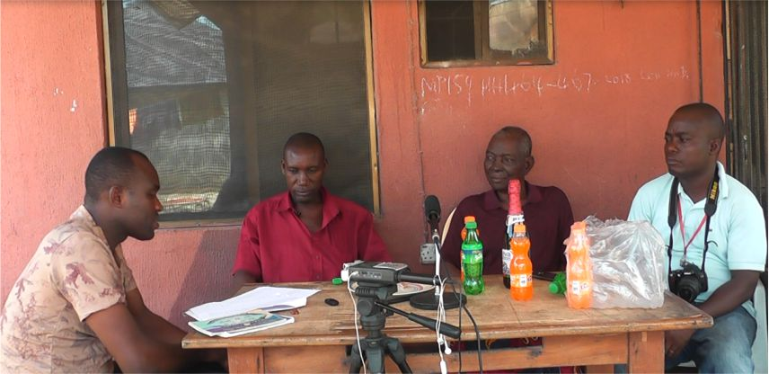

Philip Oghenesuowho Ekiugbo (PhD)
Welcome to the webpage of Dr Ekiugbo, a Senior Lecturer in the Department of Linguistics Studies, University of Benin, Benin City, Nigeria. He was formerly of the Department of Linguistics, National Institute for Nigerian Languages, Aba, Nigeria (2020-2025); and has worked as Editor with the Ughelli Times of Nigeria Magazine, Ughelli, Delta State (2016-2020), and as Editorial Assistant with the Christian Times of Nigeria Magazine, Ughelli (2013-2016).
Dr Ekiugbo holds a PhD in Linguistics (Phonology) from Nnamdi Azikiwe University, Awka; a Master of Arts in African Linguistics from the University of Benin, Benin City, Nigeria; and a Bachelor of Arts in Linguistics from Delta State University, Abraka, Nigeria. His research interests include phonology, applied linguistics and language documentation/ethnography.
TOP PROJECTS
-
April 02, 2023
A Collection of Research Works on Different Aspects of the Urhobo Language and People....
-
July 30, 2026
An Urhobo-to-English dictionary hosted on the Webonary platform for open access. Android and IOS applications are hosted on the relevant playstore...
Emejulu's Festschrift
A collection of well-researched scholarly essays in honour of Professor Obiajulu A. Emejelu, to mark his end of tenure as the 4th Executive Director of the National Institute for Nigerian Languages, Aba...